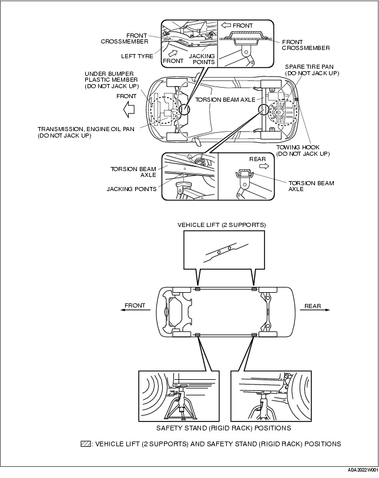

JACKING POSITIONS, VEHICLE LIFT (2 SUPPORTS) AND SAFETY STAND (RIGID RACK) POSITIONS
id000000001100
Jacking Positions
-
Warning
• Improperly jacking a vehicle is dangerous. The vehicle can slip off the jack and cause serious injury. Use only the correct front and rear jacking points and block the wheels.
• Use safety stands to support the vehicle after it has been lifted.
Front
-
• At the jacking plate of the front crossmember.
Rear
-
• At the center of torsion beam axle.
Vehicle Lift Positions
Front and rear
-
Warning
-
• Unstably lifting a vehicle is dangerous. The vehicle can slip off the lift and cause serious injury and/or vehicle damage. Make sure that the vehicle is on the lift horizontally by adjusting the height of support at the end of the arm of the lift.
Safety Stand Positions
Front
-
• Both sides of the vehicle, on side sills.
Rear
-
• Both sides of the vehicle, on side sills.
Jacking positions, vehicle lift (2 supports) and safety stand (rigid rack) positions view
